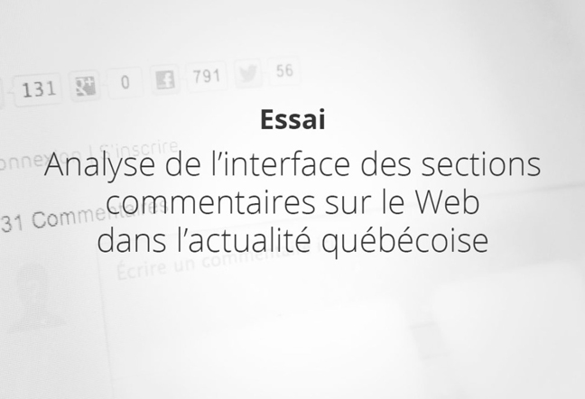
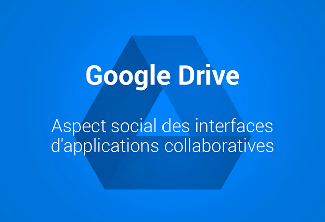
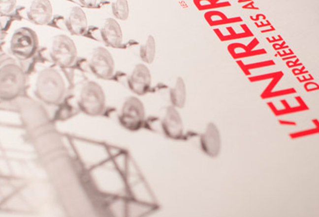
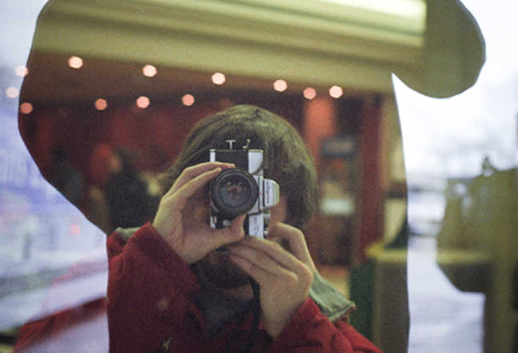
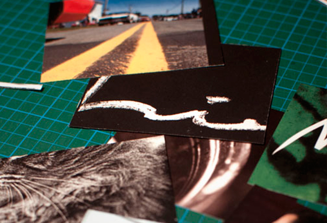

<!doctype html>
<html lang="fr">
<head>
<meta charset="utf-8">
<title>Mathieu Côté » designer graphique</title>
<link href='style/normalize.css' rel='stylesheet' type='text/css'>
<link href='https://fonts.googleapis.com/css?family=Raleway:300,500,700' rel='stylesheet' type='text/css'>
<script type="text/javascript" src="lib/jquery-1.12.0.min.js"></script>
<style>
    body {
        font: 10px/12px Raleway, sans;
        position:relative;
    }
    #main-content {
        max-width:720px;
        margin: 10px auto;
    }
    #entete {
        background: url('img/stambroise-sthenri.jpg') center center no-repeat;
        /* background-attachment: fixed; */
        background-size: cover;
        color: #ffffff;
        padding: 20% 10% 20%;
    }
    h1 { 
        font-size: 5em;
        font-weight: 700;
        text-transform: lowercase;
        margin: 0;
        line-height: 40px;
    }
    h2 {
        line-height: 2em;
        margin: 0;
        font-weight: 100;
        text-transform: lowercase;
    }
    #resume {
        font-size: 2em;
        line-height: 28px;
        text-align: center;
        font-weight: 100;
        padding: 5% 10% 2%;
    }
    .calltoaction {
        text-align: center;
        border: 2px #f0f solid;
        padding: 1em;
        font-size: 1.5em;
        margin: 1em auto 2em;
        display: block;
        width: 30%;
        text-decoration: none;
        color: #f0f;
    }
    .calltoaction:hover {
        background-color:#f0f;
        color: #fff;
    }
    hr {
        border: none;
        border-bottom: 1px solid #ccc;
        width: 50%;
        margin: 5em auto; 
        clear: both;
    }
    .projet {
        clear: both;
    }
    .projet span {
        float: left;
        width: 50%;
        min-height: 27.5em;
        padding-left: 25px;
    }
    .projet img {
        float: left;
    }
    .projet h3 {
        font-weight: 400;
        font-size: 2.75em;
        line-height: 1em;
        margin: 0;
    }
    .projet p {
        font-size: 1.5em;
        font-weight: 100;
        line-height: 1.5em;
    }
    .projet a {
        text-decoration: none;
        color: #f0f;
    }
    #social ul li  {
        width:16%;
        display: block;
        float:left;
        padding: 2%;
        font-size: 1.2em;
    }
    #social h4 {
        text-transform: uppercase;
        font-weight: 100;
        font-size: 1.5em;
    }
    small {
        clear: both;
        font-size:1.5em;
        color:#ccc;
        width: 100%;
        display: block;
        text-align: center;
        line-height: 10em;
        font-weight: 100;
    }
        
</style>
</head>
<body>
    <div id="entete">
        <h1>Mathieu Côté</h1>
        <h2>Designer graphique</h2>
    </div>
    <div id="main-content">
    <p id="resume">Collaborateur calme et réfléchi démontrant une forte capacité d’analyse et faisant preuve de créativité dans la résolution de&nbsp;problèmes.</p>
    <!--<a class="calltoaction" href="#projets">Consulter mes projets</a>-->
    <hr id="projets" />
    <div class="projet">
        
        <span>
        <p id="meta"><a href="">UX/UI design</a> _ <a href="">2014</a></p>
        <h3>Commentaires d'actualité</h3>
        <p id="description">Mon essai porte sur le design d'interface des sections commentaires dans un contexte d'actualité politique. Il s’agit d’un premier pas vers le portrait des sections commentaires québécoises.</p>
        </span>
    </div>
    <hr />
    <div class="projet">
        
        <span>
        <p id="meta"><a href="">UX/UI design</a> _ <a href="">2013</a></p>
        <h3>Google Drive</h3>
        <p id="description">Ce projet visait à améliorer l'utilisation de l'outil de collaboration Google Drive dans un contexte étudiant. En équipe avec J. Auchu, C. Greaves, A. Ouerda</p>
        </span>
    </div>
    <hr />
    <div class="projet">
        
        <span>
        <p id="meta"><a href="">Design graphique</a> _ <a href="">2012</a></p>
        <h3>Olympique$</h3>
        <p id="description">Le mandat était de concevoir en équipe d'une brochure statistique démontrant les enjeux économiques croissants au cours des dernières années. Le parallèle entre les performances athlétiques et financières s'est imposé. Un bref repérage photo nous a permis d'illustrer des icônes du sport amateur avec un certain niveau d'abstraction. Édition et graphiques en équipe avec Guillaume Proulx-Bégin (2012)</p>
        </span>
    </div>
    <hr />
    <div class="projet">
        
        <span>
        <p id="meta"><a href="">Photographie</a> _ <a href="">2012</a></p>
        <h3>Réflexions</h3>
        <p id="description">Ce projet s’est défini de façon très instinctive. Je me suis attardé à un lieu à priori vide d’intérêt où l’on ne fait que passer. Les baies vitrées de l’aire d’attente de la gare du Palais possèdent une qualité de réflexion impressionnante. En ignorant le cadre de ces surfaces réfléchissantes, les deux réalités présentées fusionnent. Cela permet de superposer plusieurs niveaux de lecture et créer des relations entre les éléments.</p>
        </span>
    </div>
    <hr />
    <div class="projet">
        
        <span>
        <p id="meta"><a href="">Design graphique</a> _ <a href="">2012</a></p>
        <h3>Folioscope</h3>
        <p id="description">Ce flipbook permet un aperçu instantané de mon identité graphique. Il regroupe d'un côté ma signature animée et de l'autre 80 images réalisées entre 2007 et 2012. Contrairement au portfolio classique, il permet une intégration sans égard au contexte de réalisation tout en donnant une ambiance visuelle forte. Une analyse page par page met en évidence les tendances développées au cours des années. </p>
        </span>
    </div>
    <hr />
    <div id="social">
    <ul>
    <li><h4>LinkedIn</h4>Ma face, mon curriculum vitæ.</li>
    <li><h4>Tumblr</h4>Un ramassis photographique.</li>
    <li><h4>Pinterest</h4>Recherche visuelle.</li>
    <li><h4>Behance</h4>Ma face, mon curriculum vitæ.</li>
    <li><h4>C.V.</h4>La version PDF pour les vrais.</li>    
    </ul>
    </div>
    </div><!-- #main-content -->
    <small>© 2016 Mathieu Côté, tous droits réservés.</small>
<script type="text/javascript" src="lib/retina-1.3.0/retina.min.js"></script>
</body>
</html>